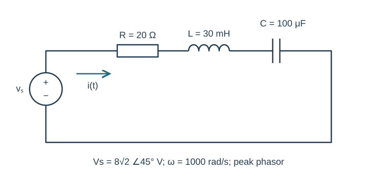
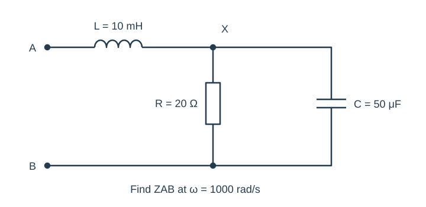
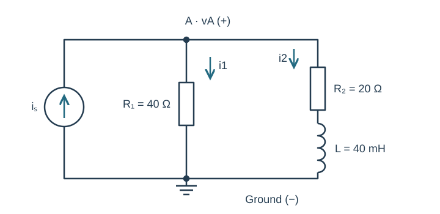
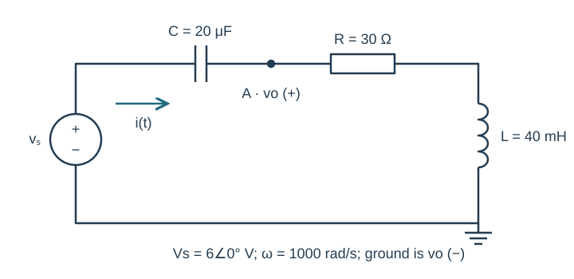
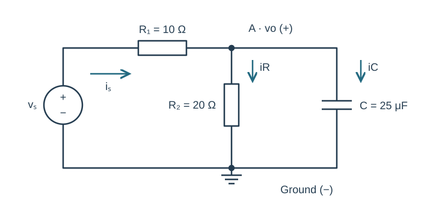

Course practice / Batch 06 / 2026-10-11 PDT
ENGR 202
正弦、相量与阻抗
Sinusoids, phasors & impedance · 第 6 组：HW 1 风格 5 题 + HW 2 风格 5 题
Read a sine wave with frequency in pi units
Let \(v(t)=20\sin(400\pi t+\pi/6)\;\mathrm V\), where t is in seconds.
- State peak amplitude, angular frequency, frequency in Hz, and period in ms.
- Rewrite v as a positive-amplitude cosine and state its peak cosine-reference phasor.
- Find v(0), the first maximum at or after t = 0, and the first minimum at or after t = 0.
- Sketch one period from t = 0, with a labelled time axis in ms and voltage axis in V.
中文提示（不含解答）
正弦转余弦时相位减去 π/2；找极值要选择不早于零的时刻。
An advance given in milliseconds
Let \(x(t)=12\cos(1000t-\pi/4)\;\mathrm V\) and define \(y(t)=x(t+0.50\;\mathrm{ms})\). All waveform arguments must ultimately use t in seconds.
- Write y(t) explicitly and give the phasors X and Y, using positive peak magnitudes and principal phases in (−180°,180°].
- Calculate the phase change in radians and degrees. Is the waveform advanced or delayed?
- Find the first positive maximum of x and of y. Check that their time difference agrees with the specified shift.
- Sketch both waves over one period on the same axes; label the two maxima.
中文提示（不含解答）
把 0.50 ms 转成秒后代入整个自变量；加时间对应向左平移。
Rectangular and polar calculations agree
Let \(z_1=-4+j4\sqrt3\) and \(z_2=3-j3\).
- Convert each number to polar form with principal phase in (−180°,180°].
- Find z1 + z2 in rectangular form and then polar form.
- Find z1 z2 and z1/z2 in both forms. Use magnitude/phase rules for one method and rectangular arithmetic for an independent check.
- Verify that multiplying your quotient by z2 recovers z1. State why the quadrant matters for z1.
中文提示（不含解答）
乘除可用极坐标，求和应先用直角坐标；负实部不能直接用普通反正切忽略象限。
Combine unequal cosine and sine components
Two voltages of the same frequency add: \(v_1(t)=5\cos(250t)\;\mathrm V\) and \(v_2(t)=-12\sin(250t)\;\mathrm V\).
- Express both as cosine-reference peak phasors in rectangular form.
- Find the total phasor in rectangular and polar form, then write one positive-amplitude cosine for v1 + v2.
- Write the same total as one positive-amplitude sine.
- Check the sum at t = 0 and t = π/500 s, and draw the two component phasors tip-to-tail using equal-scale axes.
中文提示（不含解答）
负正弦的余弦相位是正 90°；不要把它误写为负虚轴。
Draw a three-phasor subtraction to scale
Three cosine-reference voltage phasors at ω = 800 rad/s are \(A=10\angle0^\circ\), \(B=6\angle60^\circ\), and \(C=4\angle(-90^\circ)\), all in volts. Define D = A − B − C.
- Write A, B, C and D in rectangular form.
- Give D in principal polar form and write d(t).
- Construct a tip-to-tail plot of A, −B and −C. Use the same V-per-unit scale on real and imaginary axes and label the origin and each successive endpoint.
- Compare the final endpoint with D and explain why subtracting C points upward on this plot.
中文提示（不含解答）
减去相量等于加上反向相量；绘图时记下每段后的累计坐标。
Find the current and check every series voltage
The source \(v_s(t)=8\sqrt2\cos(1000t+\pi/4)\;\mathrm V\) drives R = 20 Ω, L = 30 mH and C = 100 μF in series. Define current clockwise from the positive source terminal, and each passive element voltage as a drop along this current.
- Draw the impedance circuit and state the source phasor.
- Calculate total impedance and current phasor in rectangular and polar form, then write i(t).
- Find VR, VL and VC and verify their sum equals Vs.
- Calculate i(0) and i(π/2000 s). Explain why the inductor and capacitor voltage magnitudes cannot simply be added when checking KVL.

中文提示（不含解答）
所有阻抗使用同一个 ω；电感与电容电压相位相反。
A series inductor before a parallel RC pair
At ω = 1000 rad/s, input terminal A connects through L = 10 mH to node X. From X to terminal B are two parallel branches: R = 20 Ω and C = 50 μF. There are no other connections. Find the input impedance ZAB.
- Calculate the impedance of each component.
- Combine the parallel resistor and capacitor, then add the series inductor. Report each intermediate result in rectangular form and ZAB in polar form.
- Independently verify the parallel result using admittances.
- If a peak voltage phasor of 5∠30° V is applied from A to B, find the input current phasor. State whether that current leads, lags or is in phase with the applied voltage.

中文提示（不含解答）
先计算 X 与 B 之间的并联等效，再加入 A 与 X 之间的串联元件。
Current division with a series RL branch
The source \(i_s(t)=0.30\cos(500t-\pi/6)\;\mathrm A\) injects current upward into node A. From A to ground, branch 1 is R₁ = 40 Ω. Branch 2 is R₂ = 20 Ω in series with L = 40 mH. Define vA positive at A and branch currents I1 and I2 downward.
- Draw the impedance circuit and compute total admittance.
- Find VA in rectangular and polar form, then write vA(t).
- Compute I1 and I2 and verify I1 + I2 = Is.
- Calculate vA at t = 0 and t = π/1000 s using the rectangular phasor coefficients. Explain why branch 2 uses R₂ + jωL as one impedance.

中文提示（不含解答）
两条支路电压相同；R₂ 与 L 之间的中间节点不连接其他支路。
Voltage across a series resistor and inductor
The source \(v_s(t)=6\cos(1000t)\;\mathrm V\) drives a series loop containing C = 20 μF, R = 30 Ω and L = 40 mH, in that order from the positive source terminal. The lower end of L is grounded. Output vo is measured from node A between C and R to ground, so it spans R and L together. Current flows from the source through C, R and L.
- Calculate total input impedance and the combined output impedance.
- Use impedance voltage division to find Vo in rectangular and polar form and write vo(t).
- Find I, VC, VR and VL. Verify Vo = VR + VL and Vs = VC + Vo.
- Compare output and source peak amplitudes. Explain why the complex voltage-divider calculation, rather than a ratio of ordinary magnitudes added together, is required.

中文提示（不含解答）
输出跨在两个串联元件上；分压公式的分子应包括 R 和 L 的整个阻抗。
A resistor feeding a parallel RC output
The source \(v_s(t)=12\cos(2000t-\pi/4)\;\mathrm V\) connects through R₁ = 10 Ω to node A. R₂ = 20 Ω and C = 25 μF each connect from A to ground. Define vo from A to ground, source current through R₁ toward A, and both load currents downward.
- Reduce the parallel load and calculate total input impedance.
- Find the source-current and output-voltage phasors in rectangular and polar form, then write vo(t).
- Find the two load currents and verify KCL at A. Verify source voltage equals the voltage across R₁ plus Vo.
- Predict vo at t = 0 and t = π/4000 s. Give the source frequency in Hz and its phase as a sine source for optional LTspice verification. Compare these two positions in a late cycle after transients settle, using matching current directions. Label plots with time and voltage units.

中文提示（不含解答）
负载不是单独一个电容；先将 R₂ 与 C 并联化简。仿真若用正弦源，要转换相位约定。